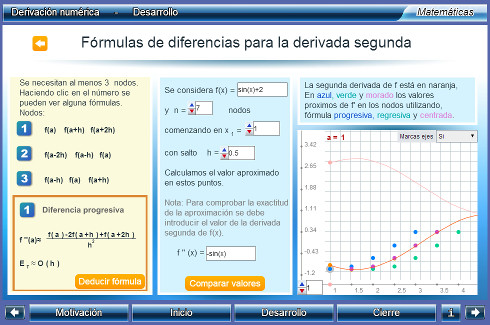
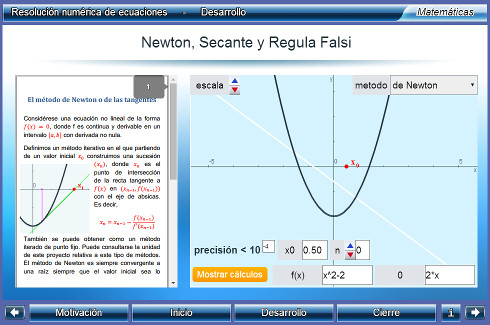

Unidades Didácticas
Interactivas para la Universidad


|
|
Unidades Didácticas Interactivas para la Universidad |
|
|
que implemente el Canvas de HTML5, como por ejemplo: Google Chrome, Mozila Firefox o Safari |
|
Un_021_DerivacionNumerica  Descargar |
Derivación numérica
Los objetivos de la unidad son los siguientes: - mostrar diferentes fórmulas de derivacion numérica (diferencias progresivas, regresivas y centradas) justificando su validez a partir de desarrollos en serie de Taylor. - analizar el error de la aproximación numérica de la derivada en un punto cuando se utilizan estas fórmulas. Área: Matemáticas Nivel: Licenciatura |
|
Un_025_IntegracionNumerica
Descargar |
Integración numérica
En esta unidad se pretende: - aproximar una integral definida utilizando la regla del trapecio - aproximar una integral definida utilizando la regla de Simpson - analizar los errores de aproximación en la regla del trapecio y en la regla de Simpson Área: Matemáticas, Cálculo integral, Cálculo numérico Nivel: Licenciatura |
|
|
Un_039_ResolucionNumericaEcuaciones  Descargar |
Resolución numérica de ecuaciones
Resolver una ecuación f(x)=0 es determinar aquellos valores que verifican esa igualdad. La teoría de Galois muestra cómo las ecuaciones polinómicas --las que podemos considerar como las más sencillas al intervenir sólo sumas, restas y multiplicaciones-- de grado mayor o igual que cinco no son resolubres por radicales, es decir, que no puede encontrarse una expresión algebráica que permita calcular sus raíces. Por tanto sólo sabemos cómo resolver unos pocos tipos de una infinidad de ecuaciones. Es necesario proceder a determinar soluciones aproximadas con una precisión deseada y para ello se utilizan metodos iterativos que a partir de un valor inicial se construye una sucesión de valores que converja a una solución. En esta unidad se busca aprender los siguientes métodos iterativos para la resolución de ecuaciones: a) Método de la bisección b) Método de la Secante c) Método de la Regula Falsi d) Método de Newton Área: Matemáticas, Cálculo, Funciones Nivel: Licenciatura |
|
que implemente el Canvas de HTML5, como por ejemplo: Google Chrome, Mozila Firefox o Safari |